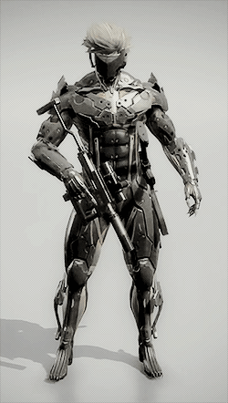
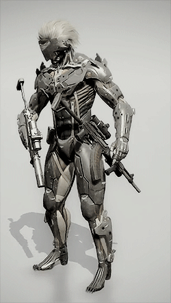
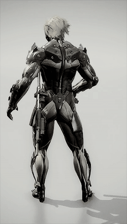
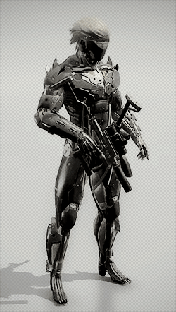

“雷電” : The secret Raiden suit in MGSV The Phantom Pain.↳ The main strength of this outfit is the increased sprinting speed and jump distance, it looks totally badass! It lets you run at the speed of your horse, when you run into enemies it will knock them down.